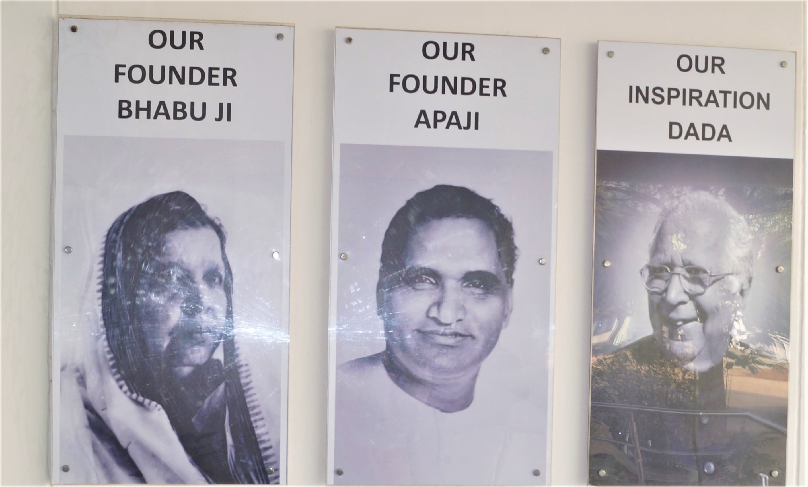

About Us
Banasthali Vidyapith At a Glance...
Banasthali Vidyapith At a Glance...
the founding father of Banasthali Vidyapith, resigned his prestigious post of Secretary in the Home and Foreign Department in the erstwhile Jaipur State in 1927 and selected the remote village of Banthali as the centre of his life’s work. His plan was to organize a programme of rural reconstruction on the lines laid down by Gandhiji and also to train public workers through constructive service of the people.
While so engaged in his work Shastriji also wanted to train his promising daughter Shantabai as a social worker dedicated to the cause of women’s upliftment. But destiny ordained otherwise. All of a sudden, after a brief illness of a day, Shantabai bade farewell to Banasthali on 25th April, 1935 at the tender age of only 12 years. The loss seemed irreparable at the moment, but soon the mood of despondency gave way to a new hope. If one Shantabai had departed there were others who could be trained likewise. This idea gave
solace and opened the path of action...
...To complete the unfinished task of his daughter, the Shri Shantabai Shiksha Kutir was started in October 1935 in the mud huts provided by the Jiwan Kutir, with about half-a-dozen girls.
The name ‘Banasthali Vidyapith’ was adopted only in 1943. This also happened to be the year when undergraduate courses were first introduced. The institution was granted the status of a deemed university in 1983 by the UGC. Prof. Sushila Vyas , the first student of Banasthali Vidyapith was appointed the first Director of Vidyapitties.
Under the tutelage of the Shastri family, Banasthali Vidyapith has grown .Banasthali Vidyapith has been accredited by National Assessment and Accreditation Council (NAAC) with ‘A++’ Grade
Banasthali Vidyapith has been conceptualized to materialize the ethos of nation-building and Indian Culture. Since its inception, Banasthali Vidyapith has had a clear perspective about its educational efforts and has possessed a vivid picture of the form and pattern of educational programme to be adopted. Vidyapith’s aim of a full and balanced development of students' personality got concrete expression in the form of 'Panchmukhi Shiksha' which evolved out of initial experimentation. Synthesis of spiritual values and scientific achievements of the East and the West is a key feature of the Vidyapith’s educational programme. Simple living, self-reliance and khadi wearing are hallmarks of life at Banasthali.